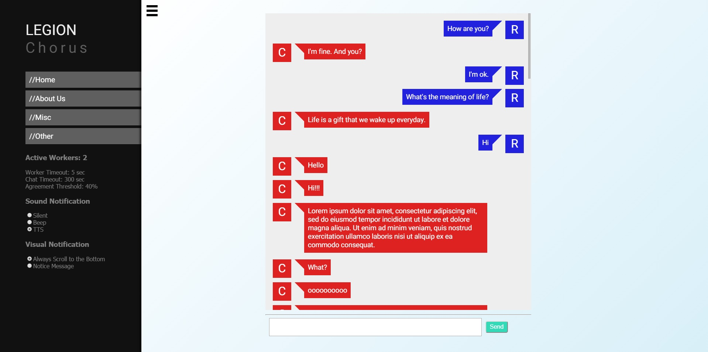
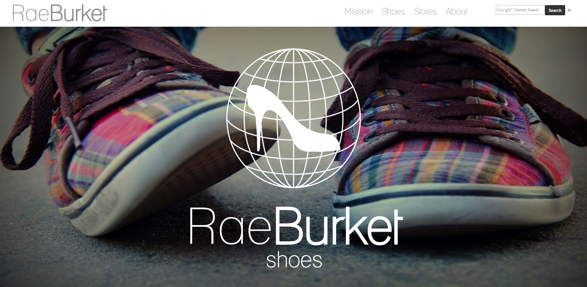
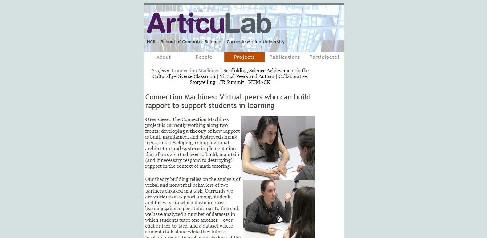

ECOTECTURE | Class
Team project with fellow friend and classmate Lisa Jung | website to create a mobile app prototype that informs users of energy consumption for each building at CMU and to raise awareness of environmentally friendly energy consumption. This prototype was for the class 67-353 IT/Environmental Sustainability. You can find the prototype here and the instructional video here! The documentation/mock proposal can also be found here.

LEGION: Chorus | Web Designer
Worked on redesigning the user interface for Legion: CHORUS, a research project aimed to help users ask questions and receive answers from crowd computing via chat interface. Worked under Jeff Bigham as a web designer and research assistant at a Human Computer Interaction Lab. Click here for the interface!

CMU Sports Analytics | Web Designer
Redesigned the club's website to incorporate social media feeds, responsive web design, and ease of use. Click here for the website!

Rae Burket Shoes | Class
Term project for my class "The Information Systems Mileux" (67-250). Worked with 3 classmates to make a globalized company website from a mock case study.

ArticuLab | Website Manager
Updated the lab's main website to include publications and short bios of each lab member.